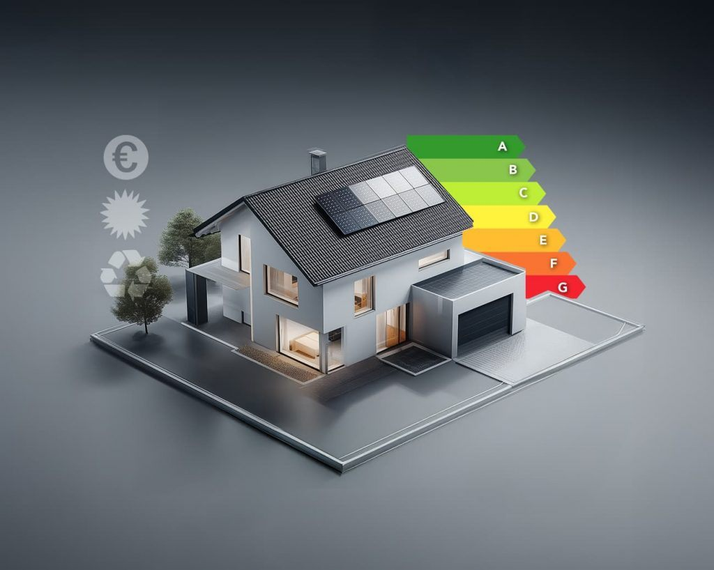
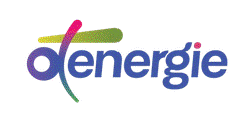
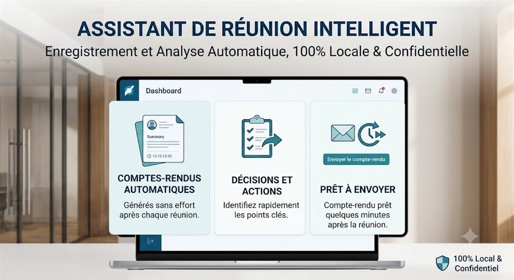

Des solutions en production, pas des slides
Quelques exemples de ce que nous avons construit et déployé.
Deux outils phares, en production
Deux applications construites pour OT Énergie : elles tournent chaque jour, sur 20 à 30 dossiers réels par mois.


Rentabilité d'un projet : décidée en minutes
Pour OT Énergie, l'étude de rentabilité d'un dossier passe d'heures à quelques minutes, sur 20 à 30 dossiers par mois.
Audits énergétiques : les écarts détectés systématiquement
Pour OT Énergie, chaque audit est comparé et contrôlé automatiquement : les incohérences sont repérées dossier après dossier, sur 20 à 30 dossiers par mois.
« Rien que la revue de rentabilité, avec la proposition de travaux qui arrive, représentera 25 à 30 % d'un temps plein. En ajoutant le contrôle des audits, on sera à 40-45 %. »
Je ne fais pas que conseiller : je livre
Au-delà des missions client, je conçois et mets en production mes propres applications. C'est là que s'affûte l'ingénierie que je mets ensuite au service de votre entreprise.
Une plateforme d'agents IA, en production
Une équipe d'experts-comptables et d'agents professionnels spécialisés par métier, avec leurs outils dédiés.
Des outils qui servent toute entreprise
Des outils utilisés tous les jours par les équipes, qui soulagent un collaborateur jusqu'à 20 % de son temps plein.
Assistant de réunion confidentiel : le compte-rendu prêt en minutes
Enregistrement et analyse 100 % locaux : décisions, actions et compte-rendu prêt à envoyer dès la fin de chaque réunion, sans que rien ne sorte de l'entreprise.
